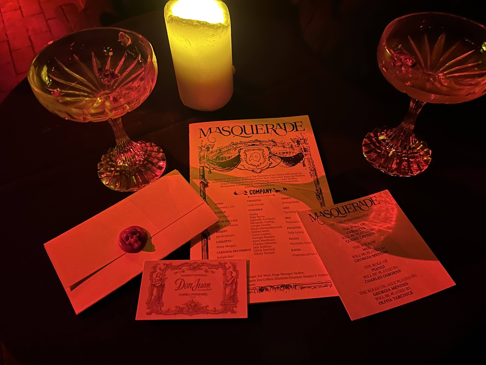
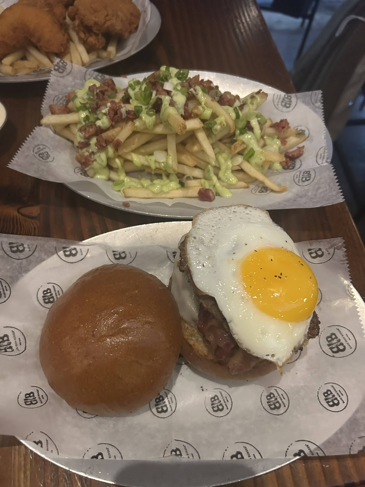
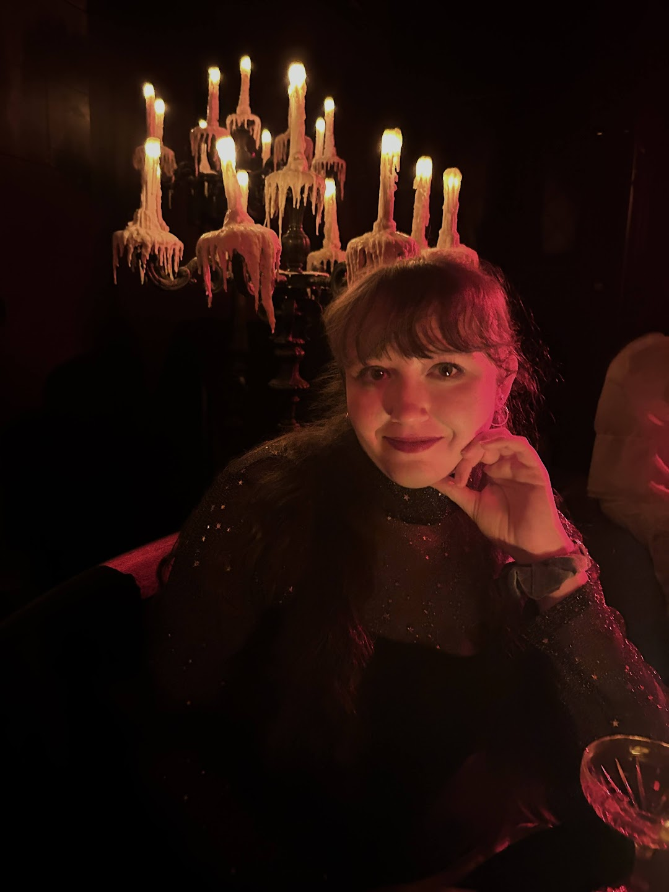

Welcome to Bright Lights of Broadway!
Want to learn more about how to maximize your time in New York's theatre district? Check out this guide to learn more about the best shows, eats, and shopping!
My Top Shows
-
Masquerade

Props collected during my experience at Masquerade! - Run Time: 2 hours with no intermission
- Theatre: 218 West 57th, New York, NY, 10019
- Summary: In an unassuming warehouse in Manhattan, step into the Palais Garnier amid the Phantom's reign. This reimagining of Andrew Lloyd Webber's Phantom of the Opera immerses fans (or, rather, phans) into the beloved musical. Attendees are required to dress in black, white, or silver eveningwear and masks as they walk through the story. Within the four floors of the warehouse, you will get to visit Christine's dressing room, roam the phantom's dungeons, and walk beneath the iconic chandalier. Audiences are immersed in the story and even interact with characters. You may even get to take a part of the story home with you, including letters from the Phantom and tickets to Don Juan!
-
Moulin Rouge
- Run Time: 2 hours and 35 minutes with one intermission
- Theatre: The Al Hiershfield Theatre
- Summary: Follow Christian, a poor poet, as he journeys in the Bohemian underworld of Paris in 1899 and falls in love with the courtesan Satine. From beginning to end, this musical is a high-energy party featuring an array of iconic pop music. But get your tickets soon! Moulin Rouge's final bows will be August 30, 2026.
-
Hadestown
- Run Time: 2 hours and 30 minutes with one intermission
- Theatre: Walter Kerr Theatre
- Summary: Ancient myth and contemporary themes intertwine in this retelling of the story Orpheus and Eurydice set to a folk-jazz soundtrack. When Eurydice makes a deal with Hades, Orpheus follows her to the underworld in hopes of saving her.

My Top Eats
-
John's Pizzeria of New York
- Menu Favorites: Pepperoni Pizza
Address: 260 W 44th St, New York, NY 10036
-
Black Iron Burger
- Menu Favorites: Aioli Fries
Address: 250 W 54th St, New York, NY 10019
-
Carnegie Diner & Cafe
- Menu Favorites: Turkey & Avocado Triple Decker
Address: 828 8th Ave, New York, NY 10019
My Top Shopping
-
Theatre Circle
- Find all your Broadway merchandise needs at Theare Circle!
- Address:268 W 44th St #1, New York, NY 10036
-
Mure + Grand
- Shop unique, aesthetic New York merch at Mure + Grand!
- Address: 1165 Broadway, New York, NY 10001
-
The Drama Bookshop
- Browse scripts, sheet music, and literary criticism at The Drama Bookshop. And keep an eye out: co-owner and Hamilton creator Lin Manuel Miranda frequents the shop!
- Address: 266 W 39th St, New York, NY 10018
About Me!

Hello! My name is Hannah, and I am a fan of all things Broadway! My love of Broadway started as a child obsessed with Annie and continued to develop throughout my adolescence. Live theatre first came accessible to me, though while studying abroad in London. In one semester, I saw over 40 West End production, and I haven't slowed down since! Though I am located in Virginia, I enjoy travelling to New York several times a year to experience new theatre. Follow along here to find out more about my NYC favorites!
Or follow my travels on Instagram!